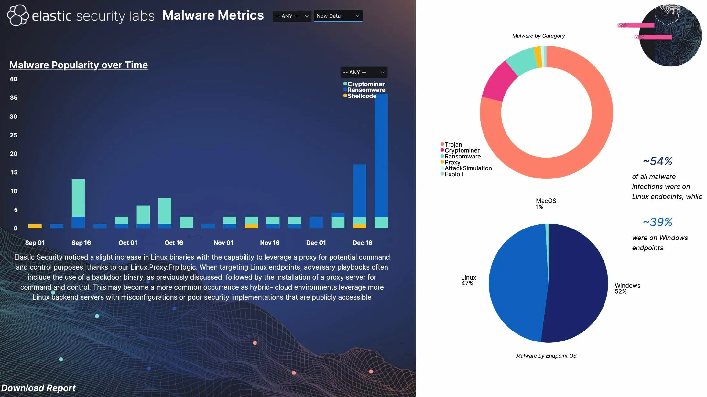
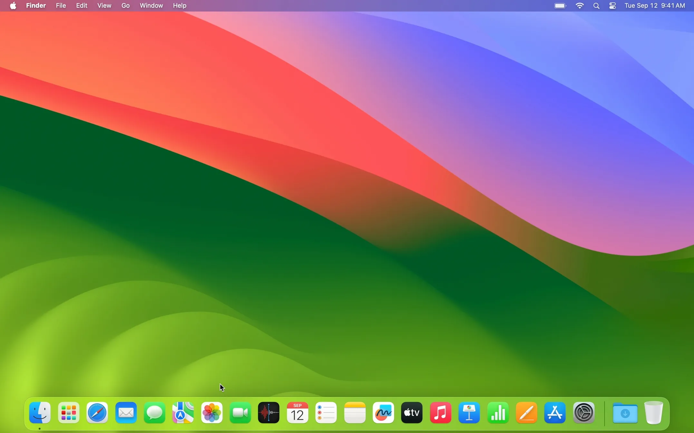

Mac: Runs smoothly because Apple designs both the hardware and software.
One of Mac's biggest strengths is that Apple makes both the hardware and the software, meaning macOS is built specifically for the machines it runs on. This tight control leads to fewer bugs, smoother updates, and better overall performance. Apps launch quickly, battery life is optimized, and everything from trackpad gestures to file management feels polished and reliable. It's why many creative professionals and everyday users alike choose Mac for a stable, streamlined experience.
Mac: Fewer viruses and security threats.
Because macOS is built on a Unix-based foundation and Apple tightly controls its software ecosystem, Macs are generally less targeted by malware and viruses. The App Store has strict app review processes, and built-in features like Gatekeeper and XProtect add extra layers of defense. While no system is immune, Mac users often face fewer security risks out of the box compared to Windows PCs—especially for those who stick to trusted sources for apps and updates.
This graph shows the % of viruses targeting which type of operating system.
Mac: Simple, clean user interface.
macOS is known for its minimal, intuitive design that makes it easy to navigate—even for beginners. Features like the Dock, Mission Control, and Spotlight search help users find and switch between apps quickly. The consistent layout and smooth animations make the system feel organized and distraction-free. For many users, this clean interface reduces frustration and makes everyday tasks more enjoyable.
Interesting Fact: Macs can run Windows using Boot Camp.
Have you ever wanted to have the quality of a Mac with a Windows operating system? Apple includes a built-in utility called Boot Camp that lets users install Windows on their Mac alongside macOS. This means you can boot into either operating system when the computer starts. It’s especially useful for people who need specific Windows-only programs but prefer Apple hardware. While newer Macs with Apple Silicon chips no longer support Boot Camp, older Intel-based Macs still offer this flexibility—making them a unique bridge between both worlds.